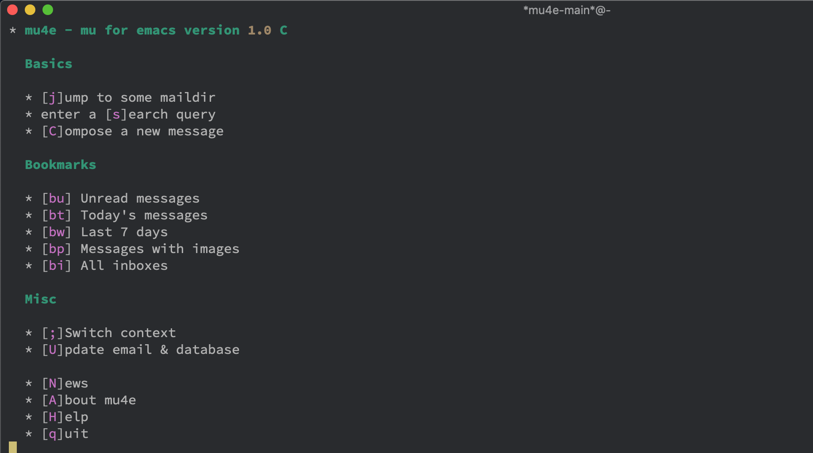

使用 Emacs 的人喜欢把所有的事情都使用 emacs 来管理，总是把有意思的事情集成进 Emacs。其中乐趣（痛苦）只有折腾过才能体会。
最近想在 Linux 中收发邮件，网页版使用起来多有不便，于是想着用 Emacs 来收发邮件岂不是很有趣。
在 Emacs 中折腾邮件也是一件很费力的事，看了好多文章有用 guns、mu4e、Wander Lust 的。试了一下 mu4e 比较容易上手，就决定是它了。
在 Emacs 中使用邮件我们需要借助其它工具来把邮件下载下来， offlineimap 是一个比较方便获取邮件的工具，通过 offlineimap 把邮件下载到本地，再通过 mu 来对下载好的文件进行索引管理，不过 mu 是个命令行工具管理起来多有不便，所以我们最后借助 emacs 来管理前两者，这样就能够管理邮件了。
offlineimap
offlineimap 用来下载邮件的工具，先来安装。
安装
1
2
sudo pacman -S offlineimap # Arch
brew install offlineimap # Mac
配置
offlineimap 安装好之后我们需要配置邮箱账号信息，这样 offlineimap 才知道我们要从哪里下载邮件，下载哪个账号的邮件。
配置文件在 ~/.offlineimaprc ，不过通常这个文件是不存在的，需要手动创建。 offlineimap 支持多账号配置，这里使用 126 邮箱。
1
2
3
4
5
6
7
8
9
10
11
12
13
14
15
16
17
18
19
20
21
22
23
24
25
26
27
28
29
30
[ general]
accounts = 126
pythonfile = ~/.offlineimap.py
fsync = False
[ Account 126]
localrepository = 126-Local
remoterepository = 126-Remote
[ Repository 126-Local]
type = Maildir
localfolders = ~/mails/ # 邮件保存的路径
nametrans = lambda foldername: foldername.decode( 'imap4-utf-7' ) .encode( 'utf-8' )
[ Repository 126-Remote]
sslcacertfile = /etc/ssl/certs/ca-certificates.crt
maxconnections = 2
type = IMAP
auth = on
ssl = yes
remotehost = imap.126.com
remoteuser = 填写邮箱地址
remoteport = 993
remotepass = 填写密码，不是登录密码，而是授权码
nametrans = lambda folder: folder.decode( 'imap4-utf-7' ) .encode( 'utf-8' )
folderfilter = lambda folder: folder in [ 'INBOX' ]
keepalive = 60
holdconnectionopen = yes
其中 offlineimap.py 的作用是为了让中文正常显示而做转码用的，不然目录你会看到乱码。把下面的代码拷贝到 ~/.offlineimap.py ，不需要改动。
1
2
3
4
5
6
7
8
9
10
11
12
13
14
15
16
17
18
19
20
21
22
23
24
25
26
27
28
29
30
31
32
33
34
35
36
37
38
39
40
41
42
43
44
45
46
47
48
49
50
51
52
53
54
55
56
57
58
59
60
61
62
63
64
65
66
67
68
69
70
71
72
73
74
75
76
77
78
79
80
81
82
83
84
#!/usr/bin/env python2
import binascii
import codecs
import sys
reload ( sys )
sys . setdefaultencoding ( "utf-8" )
def modified_base64 ( s ):
s = s . encode ( 'utf-16be' )
return binascii . b2a_base64 ( s ) . rstrip ( ' \n =' ) . replace ( '/' , ',' )
def doB64 ( _in , r ):
if _in :
r . append ( '& %s -' % modified_base64 ( '' . join ( _in )))
del _in [:]
def encoder ( s ):
r = []
_in = []
for c in s :
ordC = ord ( c )
if 0x20 <= ordC <= 0x25 or 0x27 <= ordC <= 0x7e :
doB64 ( _in , r )
r . append ( c )
elif c == '&' :
doB64 ( _in , r )
r . append ( '&-' )
else :
_in . append ( c )
doB64 ( _in , r )
return ( str ( '' . join ( r )), len ( s ))
# decoding
def modified_unbase64 ( s ):
b = binascii . a2b_base64 ( s . replace ( ',' , '/' ) + '===' )
return unicode ( b , 'utf-16be' )
def decoder ( s ):
r = []
decode = []
for c in s :
if c == '&' and not decode :
decode . append ( '&' )
elif c == '-' and decode :
if len ( decode ) == 1 :
r . append ( '&' )
else :
r . append ( modified_unbase64 ( '' . join ( decode [ 1 :])))
decode = []
elif decode :
decode . append ( c )
else :
r . append ( c )
if decode :
r . append ( modified_unbase64 ( '' . join ( decode [ 1 :])))
bin_str = '' . join ( r )
return ( bin_str , len ( s ))
class StreamReader ( codecs . StreamReader ):
def decode ( self , s , errors = 'strict' ):
return decoder ( s )
class StreamWriter ( codecs . StreamWriter ):
def decode ( self , s , errors = 'strict' ):
return encoder ( s )
def imap4_utf_7 ( name ):
if name == 'imap4-utf-7' :
return ( encoder , decoder , StreamReader , StreamWriter )
codecs . register ( imap4_utf_7 )
配置好了 offlineimap 就可以把邮件从服务器下载下来了，通过如下命令。
在 Mac 中配置 ssl 需要额外安装一下 openssl 并且通过软连接放到正确的位置
1
2
brew install openssl
sudo ln -s /usr/local/etc/openssl/cert.pem /etc/ssl/certs/ca-certificates.crt
mu
安装
mu 是用来管理下载好的邮件，同样需要先安装。
1
2
sudo pacman -S mu # Arch
brew install mu --with-Emacs # Mac
建立索引
安装好之后使用 mu 对已经下载好的进行首次索引。
1
mu index --rebuild --maildir= ~/mails # 目录要根据自己目录修改
Emacs 配置
启用 mu4e layer
在 Spacemacs 中启用 mu4e layer
1
2
3
4
(mu4e :variables mu4e-installation-path "/usr/share/Emacs/site-lisp"
mu4e-enable-mode-line t
mu4e-enable-async-operations t
mu4e-enable-notifications t)
配置 mu4e
在 user-config 中增加 mu4e 配置
1
2
3
4
5
6
7
8
9
10
11
12
13
14
15
16
(with-eval-after-load 'mu4e-alert
;; Enable Desktop notifications
(mu4e-alert-set-default-style 'notifier)) ; For linux
;;; Set up some common mu4e variables
(setq mu4e-maildir "~/mails"
mu4e-trash-folder "/已删除"
mu4e-refile-folder "/Archive"
mu4e-sent-folder "/已发送"
mu4e-drafts-folder "/草稿箱"
;; sync email from imap server
mu4e-get-mail-command "offlineimap"
mu4e-update-interval 300
mu4e-compose-signature-auto-include nil
mu4e-view-show-images t
mu4e-view-show-addresses t)
使用
打开 mu4e 使用快捷键 SPC a M

其它快捷键
作用
快捷键
打开未读邮件
bu
打开所有邮件
bi
搜索邮件
s
参考